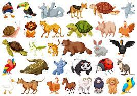
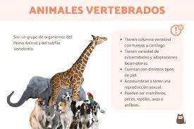
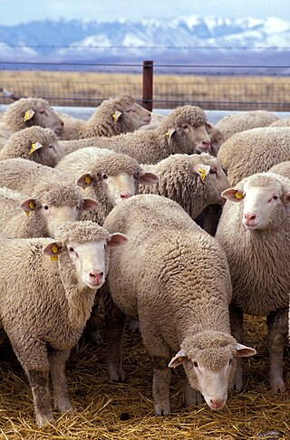
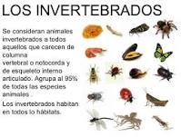
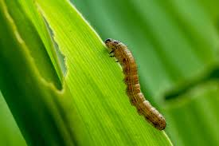

Animales
En la clasificación científica de los seres vivos, los animales (Animalia) o metazoos (Metazoa) constituyen un reino que reúne un amplio grupo de organismos que son eucariotas, heterótrofos, pluricelulares y tisulares (excepto los poríferos). Se caracterizan por su amplia capacidad de movimiento, por no tener cloroplasto (aunque hay excepciones, como en el caso de Elysia chlorotica) ni pared celular, y por su desarrollo embrionario; que atraviesa una fase de blástula y determina un plan corporal fijo (aunque muchas especies pueden sufrir una metamorfosis posterior como los artrópodos). Los animales forman un grupo natural estrechamente emparentado con los hongos (reino Fungi). Animalia es uno de los cinco reinos del dominio Eukaryota, y a él pertenece el ser humano. La parte de la biología que estudia los animales es la zoología.
Vertebarados
Los vertebrados (Vertebrata) son un subfilo muy diverso de cordados que comprende a los animales con espina dorsal o columna vertebral, compuesta de vértebras. Incluye unas 72 327 especies actuales. Los vertebrados han logrado adaptarse a diferentes ambientes, incluidos los más difíciles e inhóspitos. Aunque proceden inicialmente del medio dulceacuícola, una gran diversidad de formas evolucionó en el mar y más tarde, en el medio terrestre.
Lobo
El lobo (Canis lupus) es una especie de mamífero placentario del orden de los carnívoros. El naturalista Carlos Linneo, en la décima edición de su obra Systema naturæ, publicada en 1758, clasificó al perro doméstico como especie distinta (Canis familiaris). Sin embargo, en la actualidad predomina su consideración como miembro de la misma especie según la secuencia del ADN y otros estudios genéticos.El primer registro fósil data de hace ochocientos mil años.Los lobos son originarios de América del Norte y Eurasia, por donde antaño se distribuían y eran abundantes. Hoy en día, habitan únicamente una muy limitada porción del que antes fue su territorio.

Oveja
La oveja (Ovis orientalis aries) es un mamífero cuadrúpedo ungulado doméstico, utilizado como ganado. Como todos los rumiantes, las ovejas son artiodáctilos, o animales con pezuñas. A pesar de que el término oveja se aplica a muchas especies del género Ovis, por lo general hace referencia a la subespecie doméstica de Ovis orientalis.
Invertebrados
Se denomina invertebrados (en latín, invertebrata) a todos aquellos animales que no se encuadran dentro del subfilo Vertebrata del filo Chordata. El nombre alude a que carecen de columna vertebral.El término es aplicable al 95 % de todas las especies de animales.
Gusano
La palabra gusano se utiliza coloquialmente para designar los más diversos animales que coinciden en ser pequeños, blandos, de forma alargada y con apéndices locomotores poco destacados o ausentes.
